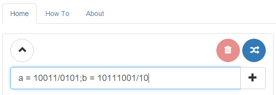
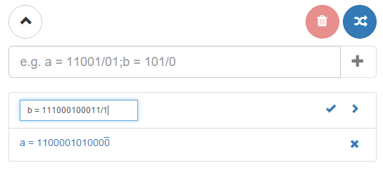
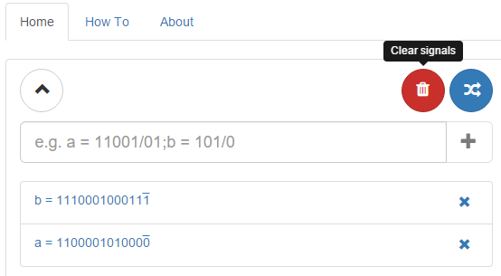
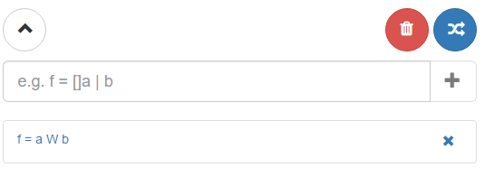
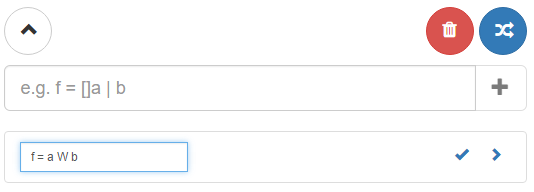
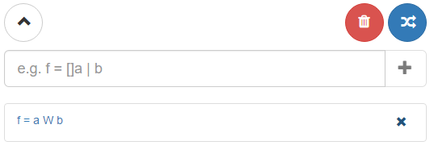
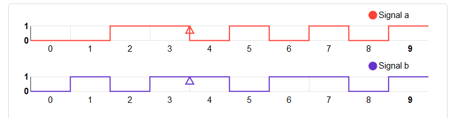

Welcome to Alambic II Tool!
This is a tool for evaluating temporal formulas, using boolean signals. These formulas are a straight-forward way to illustrate what can sometimes become very complicated in systems based on temporal logic. The features of this app are:
- Management of boolean signals
- Management of temporal formulas
- Evaluation of a temporal formula based on referenced boolean signals
- Presentation of signals and formulas as graphical diagrams
Boolean signals
Symbols
Below is the notation used to define a boolean signal:
| Equal sign ({{symbols.equal}}) | used to associate a boolean signal to its identifier |
| Slash ({{symbols.slash}}) | used to determine the periodic part of a signal |
| Semicolon ({{symbols.semiColon}}) | used to separate multiple boolean signals |
| Bits (0,1) | truth values (0=false, 1=true) |
Parts of a boolean signal
We consider every boolean signal as being infinite and periodic. Each signal is composed of three basic parts:
- identifier
- identifiers match an exact string of text in lower case and must be unique. e.g. a, b, mysignal, etc.
- fixed part
- every signal has a fixed part composed of 1s and 0s. e.g. 1011, 101, etc.
- periodic part
- every signal has an endlessly repeated part composed of 1s and 0s and preceded by a slash. e.g. /01, /011, etc.
So a boolean signal can be represented such as: a = 1001/11. One can provide
multiple boolean signals separated by semi-colons.
e.g. a = 1001/11;b = 101/10.
Boolean signals management
Boolean signals must follow a strict syntax, i.e id1 = fixedPart1/periodicPart1[;id2 = fixedPart2/periodicPart2...]
A boolean signal can be altered by clicking on it in the list under the main text field. Once a modification has occurred, its graphical representation is updated and also the graphical representation of all of the formulas referencing it
Boolean signals can be removed from the list of signals by clicking on the blue cross. However, once referenced a boolean signal cannot be deleted until it is no longer the case.
If no boolean signal is referred by any formula, the list of boolean signal can be cleared by clicking the red button above the text field
Temporal formulas
Symbols & operators
Below is the notation used to define logical and temporal operators:
| Operator | Symbol |
|---|---|
| Material Implication ( ): | −> |
| logical OR ( ): | | |
| logical AND ( ): | & |
| NOT ( ): | ! |
| EVENTUALLY ( ): | <> |
| ALWAYS ( ): | [] |
| WEAK UNTIL (W): | W |
| truth values: | 0, 1 |
| identifier: | a, b, abc, ... |
Operator precedence
Below is the order in which logical and temporal operators are evaluated (but do put parentheses to make it clearer):
- PARENTHESES ()
- NOT
- EVENTUALLY
- ALWAYS
- WEAK UNTIL W
- AND
- OR
- IMPLIES
Temporal formulas management
Temporal formulas refer to existing boolean signals such as a, b, etc. For example, the temporal formula f {{symbols.equal}} a W b refers to the signals a and b. Thus, these two signals cannot be deleted as long as they are referenced.
the relationship between temporal formulas and boolean signals is of type many-to-many. That means, each boolean signal can be referenced by zero or many temporal formulas, and a temporal formula can refer to one or many boolean signals.
Temporal formulas can also be altered by clicking on them in the list below the main text field.
Temporal formulas can be removed by clicking on the blue cross in the list of temporal formulas.
The red button above the temporal formulas text field can be used to clear the list of formulas.
The blue button above the text field can be used to generate a random signal or formula (maybe only useful for us during development...).
Graphical presentation
Both boolean signals and temporal formulas are presented by a boolean chart. These graphical representations are updated each time a boolean signal changes (added, updated or removed)
There is a small mark to highlight the start of the periodic part.
About
This is Alambic v2 created by Mouad El Merchichi using AngularJS , Twitter Bootstrap & d3 frameworks. Monitored by Mr. Frédéric Bapst & Mr. François Kilchoer.